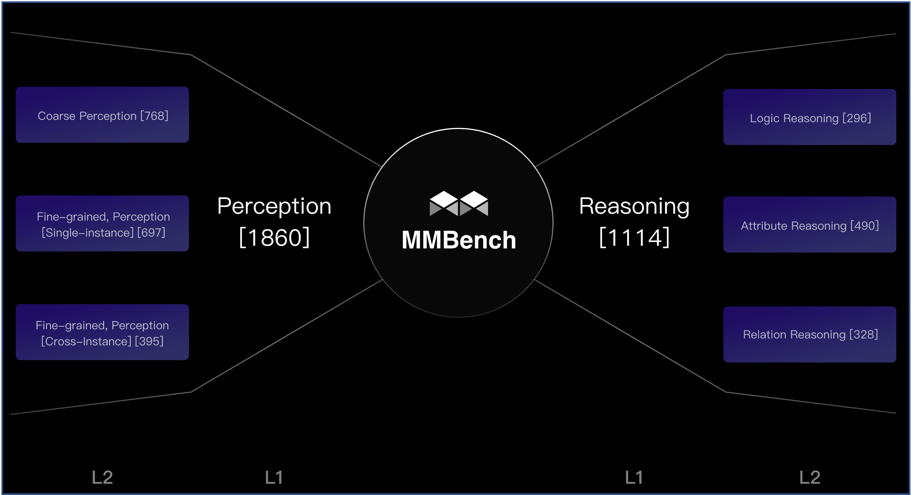
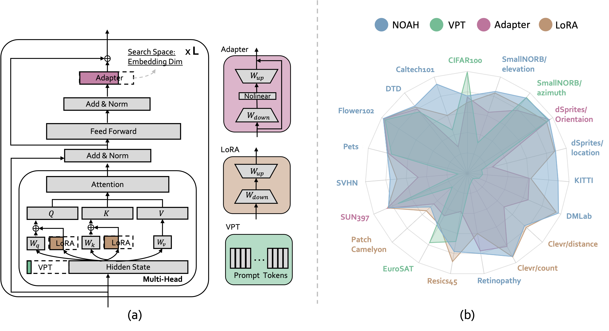
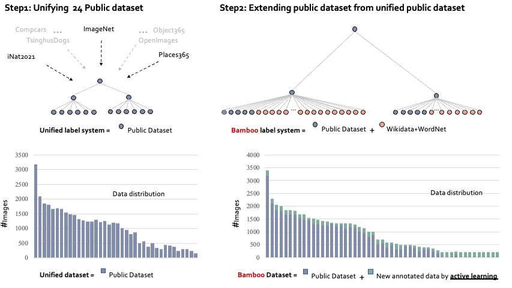

|
Hi! I'm Yuanhan Zhang, here is the standard Chinese pronunciation for my first name : Yuanhan, a second-year PhD student at MMLab@NTU, supervised by Prof. Ziwei Liu. My research interests lie on the computer vision and deep learning. Particularly, I am interested in multi-modal learning and its transferable ability. Email / Google Scholar / Twitter / Github |
|
|
- [2023-09] Visual Prompt Retrieval is accepted in NeurIPS2023, see you in New Orleans!
- [2023-09] Gave a talk at Alibaba, Damo Academy, Hosted by Dr. Lidong Bin
- [2023-09] Gave a talk at HITSZ, Hosted by Prof. Rui Shao
- [2023-06] Introducing Otter. Check it out now!
- [2022-10] We won the first place in Computer Vision in the Wild Challenge.
- [2022-07] OmniBenchmark is accepted in ECCV2022.
-
[2022-06] Try out the Bamboo demo on Huggingface spaces
- [2022-03] Bamboo dataset released.
|
|
|

|
Yuan Liu, Haodong Duan, Yuanhan Zhang, Bo Li, Songyang Zhang, Wangbo Zhao, Yike Yuan, Jiaqi Wang, Conghui He, Ziwei Liu, Kai Chen, Dahua Lin arXiv Preprint, 2023 PDF / Dataset and Code 
Benchmarking the multi-modal understanding capability of vision language models |

|
Bo Li*♠, Yuanhan Zhang*♠, Liangyu Chen*, Jinghao Wang*, Fanyi Pu*, Jingkang Yang, Chunyuan Li, Ziwei Liu *equal contribution,♠project lead arXiv Preprint, 2023 PDF / Dataset and Code 
A vision-language model with in-context instruction tuning |
|

|
Yuanhan Zhang, Kaiyang Zhou, Ziwei Liu. arXiv Preprint, 2022 PDF / Project Page / Code 
Searching prompt modules for parameter-efficient transfer learning. |
|

|
Yuanhan Zhang, Qinghong Sun, Yichun Zhou, Zexin He, Zhenfei Yin, Kun Wang, Lu Sheng, Yu Qiao, Jing Shao, Ziwei Liu. arXiv Preprint, 2022 PDF / Project Page / Demo / Code 
4 times larger than ImageNet; 2 time larger than Object365; Built by active learning. |

|
|


{kind=link}
|
|
- Conference reviewer for CVPR/ECCV/ICCV/ICLR/NeurIPS
- Journal reviewer for T-PAMI/IJCV
- Organizer for The AI Talk
|
|
|
Last updated in Dec. 2023. Homepage credits: Jon Barron. |